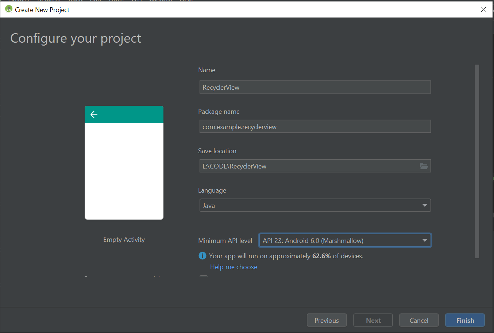

Membuat Recyclerview Sederhana
New Project
Buat new project dengan nama recyclerview.

Dependency Gradle
Agar kita bisa menggunakan recycler view maka kita perlu menambahkan dependency pada build.gradle
tambahkan dependency butterknife untuk memudahkan kita untuk binding wiew
implementation 'com.jakewharton:butterknife:8.8.1'
annotationProcessor 'com.jakewharton:butterknife-compiler:8.8.1'
dan recycle view
implementation 'com.android.support:recyclerview-v7:28.0.0'
dependencies {
implementation fileTree(dir: 'libs', include: ['*.jar'])
//noinspection GradleCompatible
implementation 'com.android.support:appcompat-v7:28.0.0'
implementation 'com.android.support:recyclerview-v7:28.0.0'
implementation 'com.android.support.constraint:constraint-layout:1.1.3'
implementation 'com.jakewharton:butterknife:8.8.1'
implementation 'com.squareup.picasso:picasso:2.71828'
annotationProcessor 'com.jakewharton:butterknife-compiler:8.8.1'
testImplementation 'junit:junit:4.12'
androidTestImplementation 'com.android.support.test:runner:1.0.2'
androidTestImplementation 'com.android.support.test.espresso:espresso-core:3.0.2'
}
Membuat Model
Setiap RecyclerView didukung oleh sumber data. Dalam hal ini, kita akan mendefinisikan kelas Contact yang merepresentasikan model data yang nantinya ditampilkan oleh RecyclerView:
Buat class baru bernama Contact.java
public class Contact {
private String name;
private String phone;
private String imageUrl;
public Contact(String name, String phone, String imageUrl) {
this.name = name;
this.phone = phone;
this.imageUrl = imageUrl;
}
public String getName() {
return name;
}
public void setName(String name) {
this.name = name;
}
public String getPhone() {
return phone;
}
public void setPhone(String phone) {
this.phone = phone;
}
public String getImageUrl() {
return imageUrl;
}
public void setImageUrl(String imageUrl) {
this.imageUrl = imageUrl;
}
}
Membuat Layout Pada Main activity
Setelah membuat model, maka kita bisa buat layout untuk pada main activity sebagai layout manager dari recycle view kita, yaitu activity_main.xml tambahkan RecyclerView dari support library:
<android.support.v7.widget.RecyclerView
android:id="@+id/rvContact"
android:layout_width="match_parent"
android:layout_height="match_parent"
android:layout_marginBottom="8dp"
android:layout_marginEnd="8dp"
android:layout_marginStart="8dp"
android:layout_marginTop="8dp"
app:layout_constraintBottom_toBottomOf="parent"
app:layout_constraintEnd_toEndOf="parent"
app:layout_constraintStart_toStartOf="parent"
app:layout_constraintTop_toTopOf="parent"></android.support.v7.widget.RecyclerView>
Sekarang RecyclerView telah tertanam dalam file layout. Selanjutnya, kita dapat menentukan layout untuk setiap item dalam contact list.

Membuat Layout Khusus Recyclerview
Buat layout khusus untuk recycler view untuk menampilkan data sesuai model yang telah kita buat. yaitu item_contact.xml
<ImageView
android:id="@+id/imageContact"
android:layout_width="75dp"
android:layout_height="74dp"
android:layout_marginBottom="8dp"
android:layout_marginStart="8dp"
android:layout_marginTop="8dp"
android:src="@mipmap/ic_launcher"
app:layout_constraintBottom_toBottomOf="parent"
app:layout_constraintStart_toStartOf="parent"
app:layout_constraintTop_toTopOf="parent"
android:layout_marginLeft="8dp" />
<TextView
android:id="@+id/txtName"
android:layout_width="0dp"
android:layout_height="wrap_content"
android:layout_marginEnd="8dp"
android:layout_marginStart="8dp"
android:layout_marginTop="8dp"
android:text="Nama"
android:textSize="20dp"
app:layout_constraintEnd_toEndOf="parent"
app:layout_constraintStart_toStartOf="@+id/guideline3"
app:layout_constraintTop_toTopOf="parent" />
<TextView
android:id="@+id/txtPhone"
android:layout_width="0dp"
android:layout_height="wrap_content"
android:layout_marginBottom="8dp"
android:layout_marginEnd="8dp"
android:layout_marginStart="8dp"
android:text="Nomor Telepon"
app:layout_constraintBottom_toBottomOf="parent"
app:layout_constraintEnd_toEndOf="parent"
app:layout_constraintStart_toStartOf="@+id/guideline3"
app:layout_constraintTop_toBottomOf="@+id/txtName" />
<android.support.constraint.Guideline
android:id="@+id/guideline3"
android:layout_width="wrap_content"
android:layout_height="wrap_content"
android:orientation="vertical"
app:layout_constraintGuide_percent="0.3" />

Setelah layout item selesai, sekarang kita perlu membuat adapter untuk mengisi data ke tampilan recycle view.
Membuat Adapter Recyclerview
Buat kelas baru Contact Adapter.java
public class ContactAdapter extends
RecyclerView.Adapter<ContactAdapter.ContactViewHolder>{
Buat dataset berupa array list
private List<Contact> listContact = new ArrayList<>();
Buat konstruktor
public ContactAdapter(List<Contact> listContact) {
this.listContact = listContact;
}
private OnContactClickListener listener;
public interface OnContactClickListener {
public void onClick(View view, int position);
}
public void setListener(OnContactClickListener listener) {
this.listener = listener;
}
Hubungkan layout item contact ke adapter dan view holder
@NonNull
@Override
public ContactViewHolder onCreateViewHolder(@NonNull ViewGroup viewGroup, int i) {
View vh = LayoutInflater.
from(viewGroup.getContext()).
inflate(R.layout.item_contact,viewGroup,false);
ContactViewHolder viewHolder = new ContactViewHolder(vh);
return viewHolder;
}
Hubungkan id ke data
@Override
public void onBindViewHolder(@NonNull ContactViewHolder contactViewHolder, int i) {
Contact item = listContact.get(i);
contactViewHolder.txtPhone.setText(item.getPhone());
contactViewHolder.txtName.setText(item.getName());
Picasso.get().load(item.getImageUrl())
.placeholder(R.drawable.ic_launcher_background)
.into(contactViewHolder.imageContact);
}
@Override
public int getItemCount() {
return listContact.size();
}
Buat variabel di view holder, dan hubungkan id di layout view holder
public class ContactViewHolder extends RecyclerView.ViewHolder {
public ImageView imageContact;
public TextView txtName,txtPhone;
public ContactViewHolder(@NonNull View itemView) {
super(itemView);
imageContact = itemView.findViewById(R.id.imageContact);
txtName = itemView.findViewById(R.id.txtName);
txtPhone = itemView.findViewById(R.id.txtPhone);
itemView.setOnClickListener(new View.OnClickListener() {
@Override
public void onClick(View v) {
listener.onClick(v, getAdapterPosition());
}
});
}
}
}
Menyambungkan Adapter ke Recyclerview
Untuk menyambungkan adapter ke recycle view dan mengisi beberapa data kontak yang akan kita tampilkan maka kita perlu mengedit MainActivity.java
public class MainActivity extends AppCompatActivity implements ContactAdapter.OnContactClickListener {
public RecyclerView rv;
public ContactAdapter contactAdapter;
public RecyclerView.LayoutManager layoutManager;
public List<Contact> listContact = new ArrayList<>();
@Override
protected void onCreate(Bundle savedInstanceState) {
super.onCreate(savedInstanceState);
setContentView(R.layout.activity_main);
rv = findViewById(R.id.rvContact);
listContact.add(new Contact("Iron Man",
"102018308",
"https://cdn4.iconfinder.com/data/icons/famous-characters-add-on-vol-1-flat/48/Famous_Character_-_Add_On_1-14-512.png"));
listContact.add(new Contact("Bat Man",
"102018309",
"https://cdn4.iconfinder.com/data/icons/famous-characters-add-on-vol-1-flat/48/Famous_Character_-_Add_On_1-22-512.png"));
listContact.add(new Contact("Groot",
"102018307",
"https://cdn4.iconfinder.com/data/icons/famous-characters-add-on-vol-1-flat/48/Famous_Character_-_Add_On_1-21-512.png"));
listContact.add(new Contact("Sonic",
"102018301",
"https://cdn4.iconfinder.com/data/icons/famous-characters-add-on-vol-1-flat/48/Famous_Character_-_Add_On_1-26-512.png"));
contactAdapter = new ContactAdapter(listContact);
contactAdapter.setListener(this);
layoutManager = new LinearLayoutManager(getApplicationContext());
rv.setAdapter(contactAdapter);
rv.setLayoutManager(layoutManager);
}
@Override
public void onClick(View view, int position) {
Contact contact = listContact.get(position);
Toast.makeText(this, contact.getName(), Toast.LENGTH_LONG)
.show();
}
}
Hasil akhir dari aplikasi ini adalah sebagi berikut: